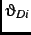
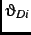
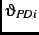
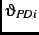

We use NES seven-point scales and the method described by Mebane (2000, 55) to
determine values of
 ,
,
,
,
 , and
 or
, and
 or
 for each
for each  .footnote If an
elector
.footnote If an
elector  does not provide values for the policy position variables
(
does not provide values for the policy position variables
(
 ,
,
,
,
 , and
or
, and
or
 ), we assume that
), we assume that  does not experience policy-related
losses, so that such losses do not affect the choices
does not experience policy-related
losses, so that such losses do not affect the choices  makes. We set
makes. We set
 if there is not at least one complete set of policy position
variable values for
if there is not at least one complete set of policy position
variable values for  and
and
 if at least one complete set
exists.footnote We include
in
if at least one complete set
exists.footnote We include
in  . To
allow for the possibility of ideologically based mobilization to vote, we also
include each elector's ideal point in
. To
allow for the possibility of ideologically based mobilization to vote, we also
include each elector's ideal point in  , using the form
to switch the effect off when
, using the form
to switch the effect off when  lacks a complete set
of policy position values.
lacks a complete set
of policy position values.
Evidence that retrospective economic evaluations matter in presidential
elections is strong, but systematic direct effects seem not to exist for
candidate choices in House elections at midterm.footnote Effects on turnout decisions also have also been
found to be weak (Arcelus and Meltzer 1975; Fiorina 1978). To measure
retrospective evaluations we use responses to a question asking whether the
national economy has gotten worse or better over the past year.footnote We include the variable,
EC, in all three sets of attributes
 , multiplied by
PP
, multiplied by
PP if Republican;
PP if
Democrat.
if Republican;
PP if
Democrat.
Party identification has long been known to affect vote choices (e.g.
Campbell and Miller 1957) and to be associated both with varying rates of
voter turnout (Campbell 1966; Converse 1966; Miller 1979) and with policy
preferences and perceptions (Brady and Sniderman 1985). We measure party
identification with six dummy variables that correspond to the levels of the
NES seven-point scale measure of partisanship, using ``Strong Democrat'' as
the reference category:
,
,
 ,
,
and
.footnoteWe include the variables in all three sets of attributes.
,
,
and
.footnoteWe include the variables in all three sets of attributes.
To take incumbent-related effects into account, we use a pair of dummy
variables that indicate whether a Democratic or Republican incumbent is
running for reelection: if a Democrat is running for reelection in elector
 's congressional district, then
's congressional district, then
 , otherwise
; if a Republican is running for reelection,
, otherwise
; if a Republican is running for reelection,
 , otherwise
.footnote In the
choice between candidates we expect to see an incumbency
advantage.footnote Because the presence of
an incumbent usually means the absence of a vigorous campaign, the probability
of not voting should be higher when an incumbent is running than when there is
an open seat.footnote
, otherwise
.footnote In the
choice between candidates we expect to see an incumbency
advantage.footnote Because the presence of
an incumbent usually means the absence of a vigorous campaign, the probability
of not voting should be higher when an incumbent is running than when there is
an open seat.footnote
We include among the attributes of not voting a measure of subjective
political efficacy (
EFF), defined as the average of responses to
two survey items (Abramson and Aldrich 1982; Balch 1974).footnote The responses are coded
 for ``agree'' and
for ``agree'' and  for ``disagree.''footnote Among the attributes of not voting we also include four
demographic variables that are frequently observed to have strong effects on
voter turnout (Born 1990): education, age, marital status, and time at current
residence. Three dummy variables measure education: high school diploma, 12+
years of school, no higher degree (
ED1); AA or BA level degrees,
or 17+ years school and no higher degree (
ED2); advanced degree,
including LLB (
ED3). The reference category for the dummy
variables is: 11 grades or less, no diploma or equivalency. Age we measure as
time in years, minus 40 (
AGE). Marital status is a dummy
variable (
MAR) coded one for ``married and living with spouse (or
spouse in service)'' and zero otherwise. Time at current residence
(
RES) is measured in whole years for durations between three and
nine years, otherwise it is coded using the same values used by Born (1990):
less than 6 months, .25; 6-12 months, or 1 year, .75; 13-24 months, or 2
years, 1.5; ten years or more, 10.footnote
for ``disagree.''footnote Among the attributes of not voting we also include four
demographic variables that are frequently observed to have strong effects on
voter turnout (Born 1990): education, age, marital status, and time at current
residence. Three dummy variables measure education: high school diploma, 12+
years of school, no higher degree (
ED1); AA or BA level degrees,
or 17+ years school and no higher degree (
ED2); advanced degree,
including LLB (
ED3). The reference category for the dummy
variables is: 11 grades or less, no diploma or equivalency. Age we measure as
time in years, minus 40 (
AGE). Marital status is a dummy
variable (
MAR) coded one for ``married and living with spouse (or
spouse in service)'' and zero otherwise. Time at current residence
(
RES) is measured in whole years for durations between three and
nine years, otherwise it is coded using the same values used by Born (1990):
less than 6 months, .25; 6-12 months, or 1 year, .75; 13-24 months, or 2
years, 1.5; ten years or more, 10.footnote
The definitions of the attributes of the choices are
To measure choices  we use individuals' self reports.footnote The sample size of electors used, pooled over
the six NES surveys, is 9,639 (by year, 1978-98, the sizes are 1,814, 1,226,
1,972, 1,833, 1,648, 1,146). Only those who did not vote or who voted for
either a Democrat or a Republican are included. Of the 10,954 respondents in
all the NES data, 1,315 were omitted due to missing or invalid
data.footnote
we use individuals' self reports.footnote The sample size of electors used, pooled over
the six NES surveys, is 9,639 (by year, 1978-98, the sizes are 1,814, 1,226,
1,972, 1,833, 1,648, 1,146). Only those who did not vote or who voted for
either a Democrat or a Republican are included. Of the 10,954 respondents in
all the NES data, 1,315 were omitted due to missing or invalid
data.footnote